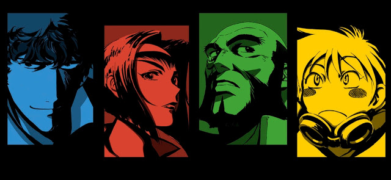

Cowboy Bebob es una serie de animación japonesa de 1998 desarrollada por el estudio Sunrise y Bandai Visual.
Sus 26 episodios están ambientados en el año 2071. La serie trata acerca de las aventuras y desventuras
de un grupo de cazarrecompensas que viajan a bordo del Bebop, su nave espacial. Cowboy Bebop explora
temas filosóficos como el existencialismo y su vacío, la soledad y las influencias del pasado.

Shinichiro Watanabe y Yōko Kanno
Este anime nace de la especial simbiosis que alcanzaron el creador de la serie, Shinichiro Watanabe y la
compositora de la banda sonora, Yōko Kanno. Entre los dos se inspiraban para dar como resultado una historia
en la que la música es un elemento más trascendente de lo común para enterder la historia.
El viaje de Yōko
Yōko Kanno realizó un viaje por Estados Unidos para enteder la música del país. A medida que avanzaba hacia
el este, en dirección a Nueva Orleans, más le costaba entender la raíz del folk, el blues y el jazz. Aún así,
todos los cortes que aparecen en el anime no tienen ningún hilo conductor en cuanto a estilo, y cada uno
está ejecutado de una manera excelente por la propia Yōko Kanno y la extensa banda The Seatbelts.
Un buen ejemplo de ello es la canción que viste al opening, un tema en el que Yōko Kanno quería expresar
la sensación de éxtasis y euforia. Prepárate para 5 minutos de pura diversión:
Si te ha gustado lo que has visto, quizá deberías echar un vistazo a esto: